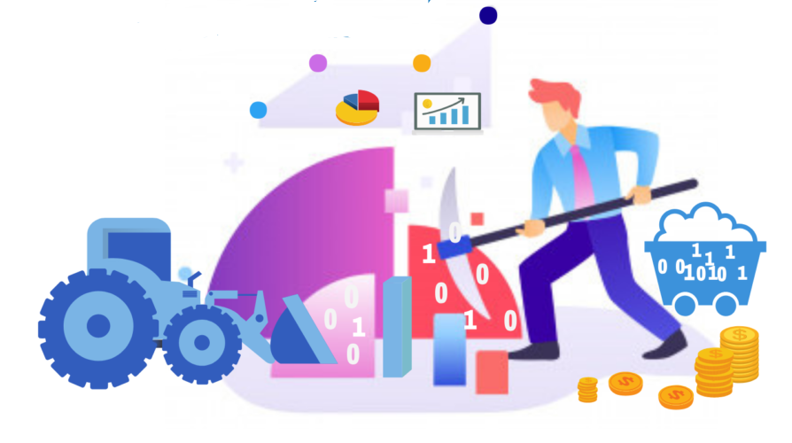

Introduction to Machine Learning

Among the various definitions of Machine Learning that one can find when conducting an internet search can be identified:
Machine Learning is a scientific discipline in the field of Artificial Intelligence that creates systems that learn automatically. Learning in this context means identifying complex patterns in millions of data. The machine that really learns is an algorithm that reviews the data and is capable of predicting future behavior. Automatically, also in this context, implies that these systems are improved autonomously over time, without human intervention. Let's see how it works.
Machine learning is a field of computing that aims to teach computers how to learn and act without being explicitly programmed. More specifically, machine learning is an approach to data analysis that involves building and adapting models, which allow programs to "learn" through experience. Machine learning involves building algorithms that adapt your models to improve their ability to make predictions.
Machine learning algorithms use statistics to find patterns in massive amounts of data. And the data, here, covers a lot of things: numbers, words, images, clicks, whatever you have. If it can be stored digitally, it can be fed into a machine learning algorithm. Machine learning is the process that drives many of the services we use today: recommendation systems like Netflix, YouTube, and Spotify; search engines like Google and Baidu; feeds from social networks such as Facebook and Twitter; Voice assistants like Siri and Alexa.
Machine learning and Artificial Intelligence

Machine learning is an area or branch of Artificial Intelligence, since machine learning algorithms serve as a tool to carry out artificial intelligence processes.
Machine learning and statistical analysis

Regarding statistical analysis, the fields of action of both disciplines are complementary, even the models used in Machine Learning algorithms are statistical models. In turn, machine learning algorithms enhance any statistical analysis by automating processes that otherwise would not be viable or would be tedious, such as finding causal relationships between variables and their correlations as well as inferring possible hidden relationships.
Machine learning y data mining
Machine learning uses data mining techniques as well as statistics to explore underlying patterns and build models on the link of the data. Data mining extracts rules from the data while machine learning is responsible for generating an automatic process for the learning of these rules and the construction of models that allow to explain and / or predict the behavior of the data and the causal relationships between variables.
Machine learning applications
Machine learning applications are transversal to all areas of knowledge, there are undoubtedly more sensitive areas such as security (both at the level of data protection and fraud analysis) and the financial field where the implementation of fast and efficient methods implies a qualitative leap because delays in decision-making and information analysis cannot be allowed. Other relevant areas are marketing, insurance, the health field as well as natural language processing areas and some advances within the Internet of Things area such as smart cars, among others.
CRISP - DM

CRoss Industry Standard Process for Data Mining synthesizes the life cycle of a data analysis project, dividing it into six main phases that are not rigid but allow progress back and forth as needs dictate.
The six phases of the process are:
1. Business Understanding. Definition of customer needs.
2. Data Understanding: Familiarization with data, identifying quality problems and making hypotheses of possible correlations.
3. Data preparation: Selection of tables, attributes, transformation and cleaning of data, treatment of missing.
4. Modeling: Selection of modeling techniques and parameter setting.
5. Model evaluation: the steps followed to create the model and how much it adapts to the business are reviewed.
6. Implantation implies the organization of the information, its presentation and disposition to be able to explain the results to the client.
This process is still used but it is also criticized that it is a process designed many years ago that has lost its validity, instead more agile processes arise that seek feedback as they advance through the stages, this is the case of Team Data Science Process is a dynamic model that is based on four stages: Business understanding, Data acquisition and understanding, Modeling, Implementation, some include a fifth stage that would require customer acceptance. It is oriented to team and collaborative work.
Similar processes are KDD Knowledge Discovery in Databases :

It consists of five stages
Selection: create an objective data set or focus on a subset of variables or information samples.
Pre-processing: cleaning data to be consistent
Tansformation: data transformation using reduction or transformation
Data Mining: look for patterns of interest depending on the objectives you are looking for.
Interpretation / Evaluation:interpretation and evaluation of the patterns obtained.
SEMMA : Powered by the SAS Institute and acronym of Sample, Explore, Modify, Model, and Assess consists of five stages:

Sample, data selection, which must be large enough to obtain the information needed and small enough to be used efficiently.
Exploration, covers understanding of data by discovering relationships between variables as well as any abnormalities.
Modification, contains methods for selecting, creating, and transforming variables to prepare for data modeling
Modeling, in this phase the focus is on applying various modeling techniques on the prepared variables to create desired models.
Evaluation, last phase in which the model is evaluated and the usefulness and reliability of the model is shown.
KDD and SEMMA can be seen as similar processes with equivalent stages, while CRISP-DM incorporates previous and subsequent steps of the previous processes, such as knowledge of the business and implementation.